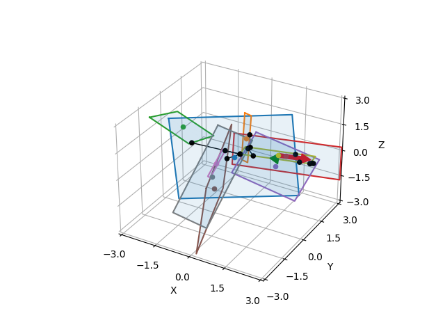

Note
Click here to download the full example code
Distance between two rectangles¶
Out:
0.6501899130556803
0.6592345507867023
1.895398147577796
0.1618047686209386
0.5196317301449648
0.5838079609893843
1.6141236778905403
0.8004690012079645
2.9419100762543353
0.12248312643696303
1.9217391725484663
1.2638838454476766
0.2872555381226027
2.0287434873046255
0.6814915239268784
0.0
0.6553020117537016
0.18141834852935432
0.11149299458993744
1.2426559211118802
1.8318252455977826
2.376591646186696
0.06967064599408276
1.8283827923898104
0.9598482581908147
0.4055032411360665
0.06963937896489551
0.0
1.4213747094737599
1.2244537295049538
1.9974685759939537
0.42799608548605883
0.2054281856177534
0.19708051382961161
2.4086181667079782
1.8931888914911412
3.391439057164482
1.960848081580617
1.6493101097763356
2.289433158408346
0.9150905183679942
0.25273846337922573
2.0954207560776426
0.5258300510556937
1.9343265953476738
1.7810892598810293
0.15503072286820824
1.1195252434587857
0.23364769236262603
0.6098670200589852
2.527554264270053
0.0
0.47504625696364816
1.136924032015496
2.594453587560205
0.5600431333049612
2.1808815605153464
1.6159560440331713
0.7651610324357757
1.5957741242040473
1.4132692057096874
1.939175234213242
0.4807760784264523
1.3922181837661673
0.0
1.0122663254512407
0.6204148079494155
1.4403157753732876
2.027656392192246
0.6247216601047989
0.0
0.7935835074495441
0.8738101102275672
3.40841500940375
2.2749246741699536
1.3173944384586282
1.9178368740775364
1.6975420682006352
0.0
0.914650426386945
0.8316735815834627
0.4832094659785399
0.6677172691591559
1.6448482521939023
1.3222956868545293
0.9719861971692961
1.3651998398811358
0.8121227497418123
1.3884256673114372
1.4411257702282538
0.5002888264574209
0.37681507489307725
0.09710238155097949
0.5094679178659884
1.5749188330792288
0.26988025572450086
0.3951489025204551
1.8372296230417788
0.9084697948895029
1.6262813685957966
0.9952695987056279
1.1213181654755398
0.5267761371172562
2.0289273214942805
2.3493439781154786
0.9454903594411969
0.7805713725208171
1.8266416033132722
0.6131756813930848
0.8340005535530227
0.0
0.8201707959170395
0.4413284637116495
2.8098760915352274
0.0
0.9846925097894483
0.6392285641260375
0.9383465582326794
1.3032148314522998
0.9665590099078052
1.0942112650509161
0.23933019509979273
1.1942862371114793
2.661135380409344
0.0
2.2616484719896595
0.6151459951230811
0.5752727311860055
1.1185108513000996
0.5160438509628543
1.3272207971773637
2.238301710957732
0.232314809478947
1.5052904651967802
1.7994173896339594
0.9528084108129394
0.5749557628153527
1.5144075366150753
1.1141213626210396
0.3846970465855639
1.7272816612494128
0.8147198295448088
2.113352329710396
1.311101240872101
0.0
1.2781508850279992
0.0
1.3845909247255235
1.209247284371512
0.0
0.6430781468183688
1.2024794091265054
0.7200570809705201
0.008395003539562705
0.6442364825967797
0.14994693894885536
0.0
0.12894445265726406
1.1594389995062964
0.0
1.6365573845341734
0.311271088559482
0.7390656960672437
0.07292268402244986
0.1597773861739338
1.1805528320082577
0.0
1.0487945030538441
0.048696385245997835
1.0610106933429695
0.8500240820865747
0.74321854450207
0.7563203263406553
0.784921910236328
2.071493445129737
0.8911885953262368
0.8651787641592215
1.5565569468970777
0.0
1.5202815109060888
0.4253368131536427
0.48587395867658206
1.7444656573219695
2.2484051351640058
0.0
1.119251195165248
0.47511387162423824
0.8278326630065744
2.175735209255057
0.343219335954185
2.8026890457413374
0.0
1.8116417624484054
0.0
0.0
0.8785247880643661
0.24063737100075677
0.0
0.07309208321407074
0.1479215730208007
1.99527742175751
0.8085065832952771
0.17289858924005394
0.0
1.3884641792658567
1.7841865009442992
0.0
0.0
0.1740817850016529
0.5022893032330699
0.832923286035681
0.0
2.5850466567323043
1.9086793070397297
1.120442343939773
1.4242554127903977
2.5107771887769497
1.1681556542330127
0.050600884750325516
1.3470605825762514
2.3344059899816347
1.4082970945531792
0.14856194026810557
1.1761814463009495
1.6296160813145666
0.4403944790349867
0.08935878160318289
1.1653859236653474
2.098378011266433
0.7569751275879573
0.5920517027543476
0.13020766390077723
1.4030782747588715
0.0
2.339896553667275
0.22011187538306845
1.9719355626188975
2.0551396710789134
0.2822678031074031
2.1468763461495444
1.0263349791030614
0.0
2.1022259763482265
0.33295219669880155
1.317058115994861
0.21211055682611366
1.5971602956541602
1.3790754007532668
0.4633420147765498
1.0706253286022562
0.3158229213466076
0.0
2.374073429451605
0.0
0.7513485831421064
0.453331226985346
0.40353658639204243
1.997773857324404
1.1193033469619966
0.0
2.418200735460794
1.0969723735832986
1.5727254890621007
0.6452702040915863
0.33751309739016877
1.9231732940163548
0.0
0.8051465264987151
0.6035402483367067
2.4555494943247447
0.6602043260455451
0.26363373286108255
0.09645235098812119
1.1996574586471556
1.8040691782434637
1.8544578205623181
0.0
1.3879550342299476
1.267477920162363
0.49157417399118875
0.1314086649261
2.5737574343164527
0.09876522252817788
1.4193647685038806
1.5141859945412062
2.708151259852701
1.4381426755770705
1.790803505222352
0.20516099587503128
0.1386513151589082
0.949325736142257
1.2040777385674348
2.2199474785971933
1.0601680504652
0.9137867189653391
0.9523329729209676
0.09449187899137182
1.7996054189666064
1.0311179143956402
0.0
0.48050417607942414
0.8152532042413667
0.6526664147064171
1.3811330484154856
0.0
1.217095356257273
1.2349028435674645
1.0282512242459154
1.7539689865392338
0.018255209016930878
1.6556577931584906
1.1510573954354941
0.3069415716486164
1.92430262581465
1.0733888578922588
0.986671540539443
2.3472076580927648
0.0
1.053260864579076
0.1271562011147645
2.30688025488128
1.388509094977076
0.0
0.9291082328487733
0.045086617935421715
2.067937903287758
1.1386358276431685
2.2407252853589017
0.25867629520446617
1.1389700454644447
0.50759104437593
1.8575085621452854
3.2110999860352893
1.985223632999275
0.39130842910466546
0.0
0.6919271568352544
0.0
0.5018241901518318
0.06943528251249034
0.759600516789477
1.975910567817428
2.352729735689977
1.5124430151841761
0.7416140023599913
0.7505414306666167
1.1420328023539756
2.0302405346902934
0.34878753304265114
0.7628939365681362
2.167346275606985
0.5963890048736272
0.22561243419632057
1.8217094817287858
0.28632585460300153
1.9567673861316053
3.184937519864313
0.8411690096086096
1.2012838667204004
1.8626959111656904
2.2064984508361505
1.5550438015624188
0.21913611147018228
0.0
0.6749308546119163
0.0
0.5298744198318868
2.0016743121726237
1.751372659101976
0.3784697128861202
0.8925977632298725
0.5437631260565093
0.5760950942258738
0.15412138359999347
2.2362469662969753
0.6226057567045469
0.6254567298002834
0.0
0.6235258023084493
0.0
0.17058485622951938
1.3471442296978222
1.1774325274408841
0.6043407358568872
1.4861368884519754
0.254576873271999
1.249293613508084
1.8894057788414265
0.9390157122967683
2.9128158744433397
1.8227637666309648
0.6202121494002103
1.1105386968279831
1.175742854807134
0.614829186395798
2.097710554293524
0.21999543125026377
0.577297367238356
1.2354809893278766
1.2542874213633313
0.24688045254952062
1.7847640551352277
0.8603261465428902
1.1599339392768755
0.6945328672246485
1.6854462050062904
0.7230545303321086
2.0644374705778774
1.2769473918440044
1.461975550927851
0.14686700411117148
1.0852242673633539
1.571340056887743
1.59869135433326
1.172526744377241
0.49915104444901964
0.1816296033967652
1.2697593622799157
1.5910878569648301
0.48250497222520217
0.0
0.0
0.6998658724681109
1.7732906339595162
0.19498760169766904
0.19950708234633693
0.8632287948562656
1.243101985015546
3.03142329237923
0.5394209509403838
1.1562818002142816
1.4442160803367423
0.02597134183675685
1.4792788302646092
2.1801990760249854
0.4499685152164812
2.281309315649108
0.0
1.734610080490667
0.6689404649976938
0.5078407537120339
1.5198497842773742
2.4824147002651213
1.1860735892529153
0.3727105692949869
0.7986125048766155
1.0644335939415168
2.204256673799188
1.7270615278075727
0.7552040731254627
0.0
0.1859588057254051
1.287429009068251
1.5474771163966297
0.4701170304174774
0.018318393706931467
0.0
2.614673698181602
1.1410122913606167
1.669099476392733
1.1642339066716927
0.5282478909579666
1.1856378634078832
0.0
2.4596814543270815
0.9981341341051758
0.5323042308261948
0.0
0.579266421080449
0.20571752933100604
1.7402425130507344
0.5997125743209283
1.8590930077496777
0.1725466693365725
0.519846836882375
1.0974453298487021
1.3785402615864106
1.4017424222235413
0.013074916491190535
1.1191912161732305
0.43544147073856143
0.2953565884476742
0.35314050682633535
1.3657264863669836
0.0
0.1563249122286411
0.9472290724982255
1.9969656345327818
0.504776390177966
1.046618888485899
0.29418999502662335
0.21765208901374364
1.018621138137716
0.495625306210227
1.6290472186333749
0.4505489440414663
1.302753111206719
2.420017590254688
0.556865239623464
2.5408232345029944
accumulated_time=0.49689173698425293
print(__doc__)
import time
import numpy as np
import matplotlib.pyplot as plt
import pytransform3d.plot_utils as ppu
from distance3d.distance import rectangle_to_rectangle
from distance3d import random, plotting
random_state = np.random.RandomState(0)
rectangle_center, rectangle_axes, rectangle_lengths = random.randn_rectangle(
random_state, center_scale=1.0, length_scale=5.0)
ax = ppu.make_3d_axis(ax_s=3)
accumulated_time = 0.0
for i in range(500):
rectangle_center2, rectangle_axes2, rectangle_lengths2 = random.randn_rectangle(
random_state, center_scale=1.0, length_scale=5.0)
start = time.time()
dist, closest_point_rectangle, closest_point_rectangle2 = rectangle_to_rectangle(
rectangle_center, rectangle_axes, rectangle_lengths,
rectangle_center2, rectangle_axes2, rectangle_lengths2)
end = time.time()
accumulated_time += end - start
print(dist)
if i > 7:
continue
plotting.plot_segment(
ax, closest_point_rectangle, closest_point_rectangle2, c="k", lw=1)
plotting.plot_rectangle(ax, rectangle_center2, rectangle_axes2, rectangle_lengths2, show_axes=False)
print(f"{accumulated_time=}")
plotting.plot_rectangle(ax, rectangle_center, rectangle_axes, rectangle_lengths)
plt.show()
Total running time of the script: ( 0 minutes 0.708 seconds)